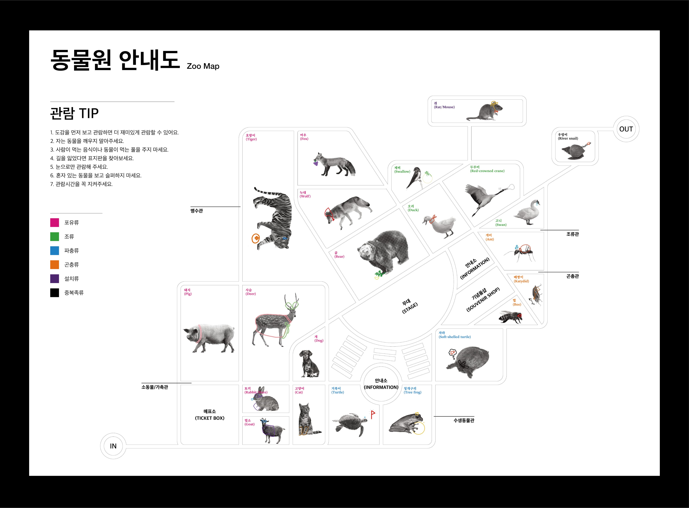
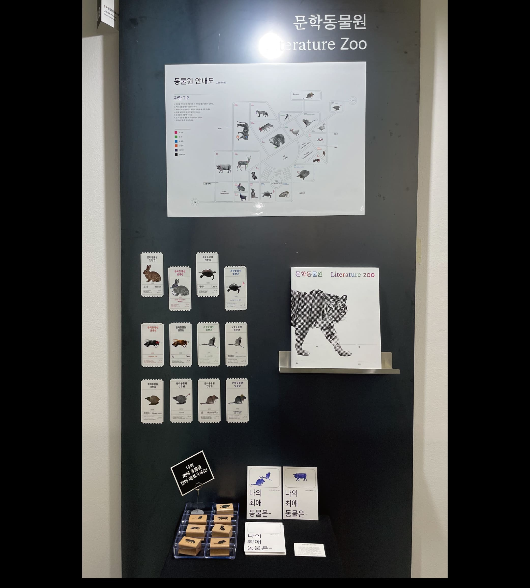
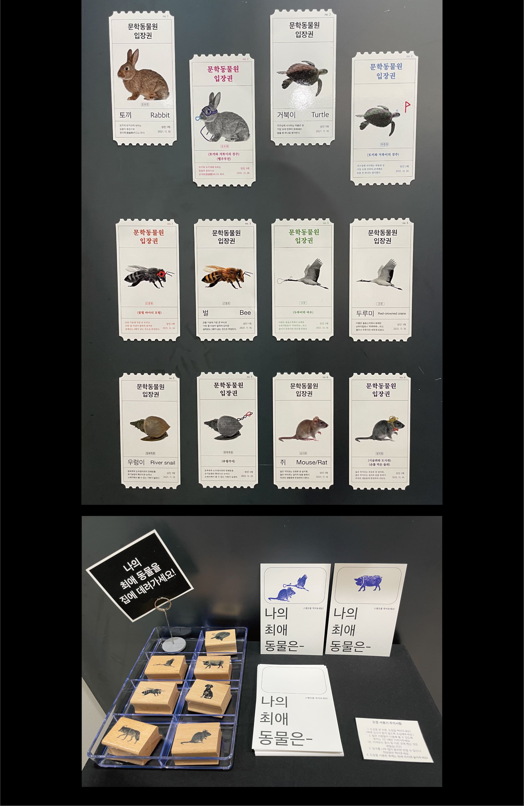
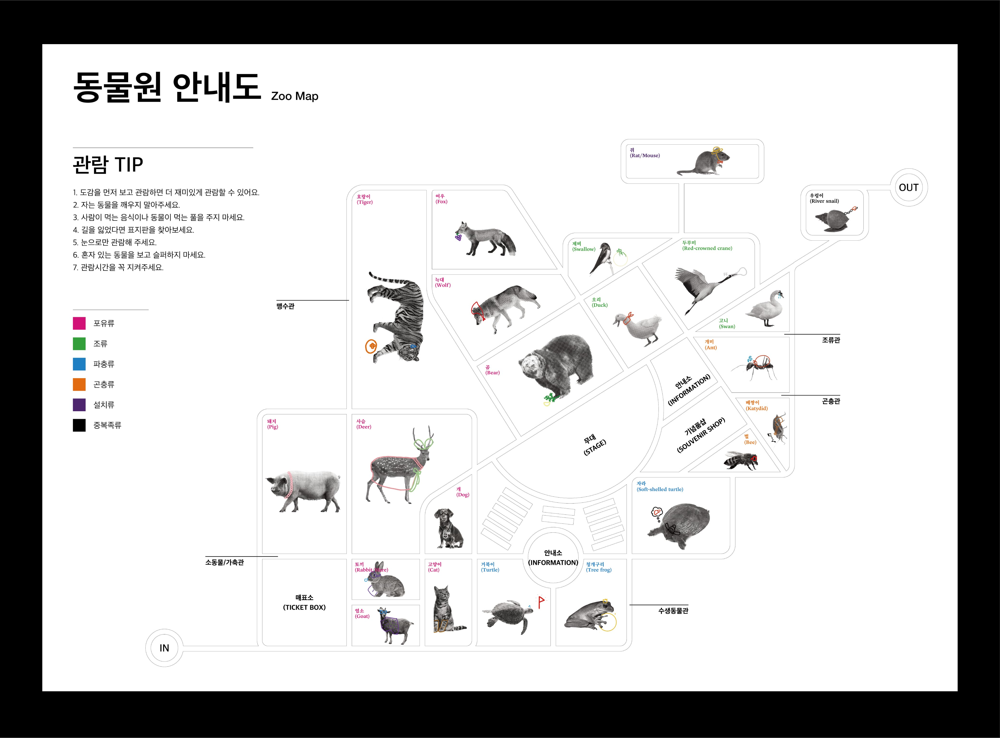
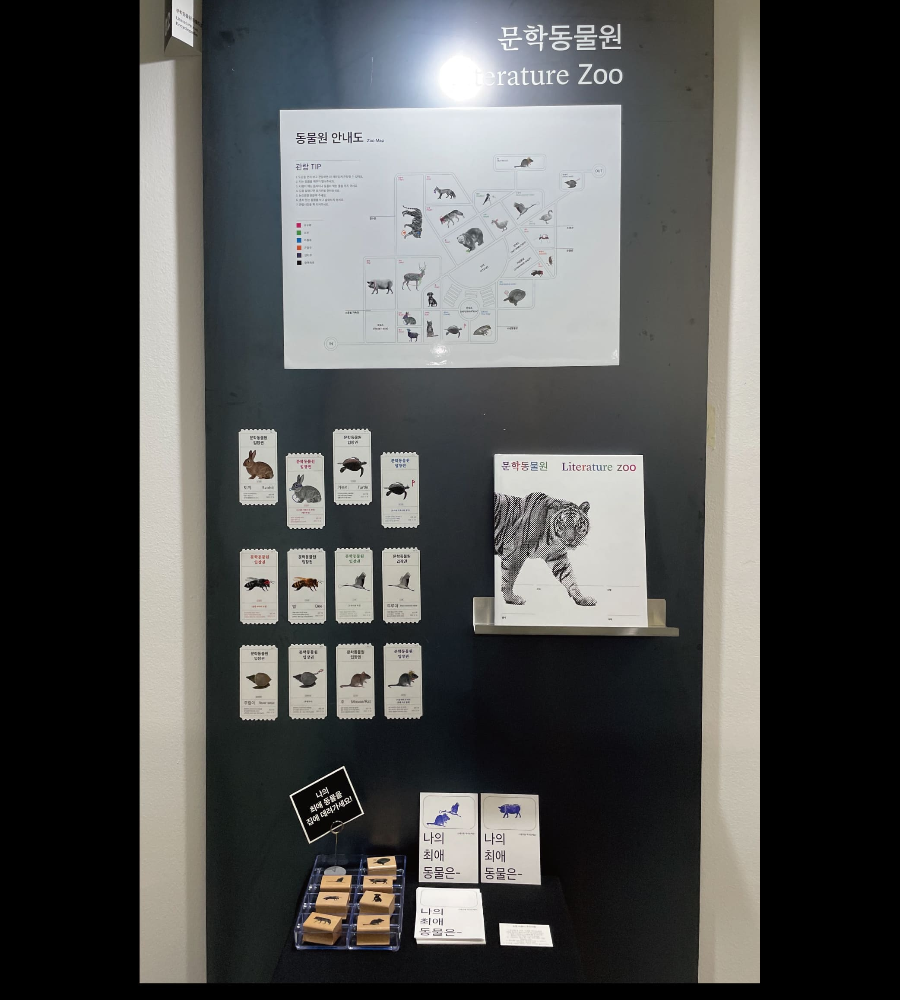
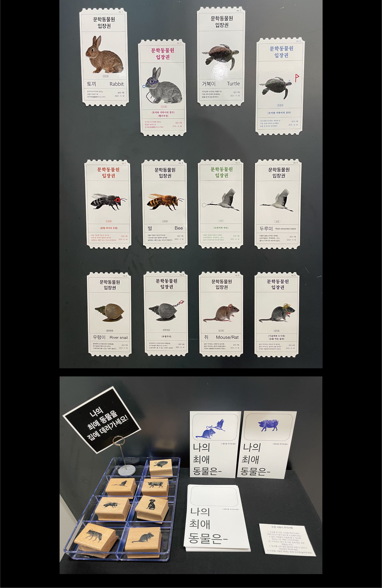

문학동물원 동물도감
Literature Zoo Encyclopedia
우리의 이야기, 문학 속에 사람만이 나오는 것은 아니다. 문학 작품 속에 등장하는 여러 동물들이 있다. 아주 부수적인 존재로 등장하기도 하고, 이야기의 주체가 동물인 경우도 있다. 이 동물들이 모여서 살아가는 가상의 동물원 ‘문학동물원’이 있다고 가정하고 이 동물원의 동물들을 모아 도감으로 제작했다. 도감은 동물의 일반적인 정보와 함께 동물이 나오는 작품의 제목과 줄거리로 구성되어 있으며 총 22마리의 동물과 31개의 이야기를 담고 있다.
강희윤 hiw0342@naver.com

 




